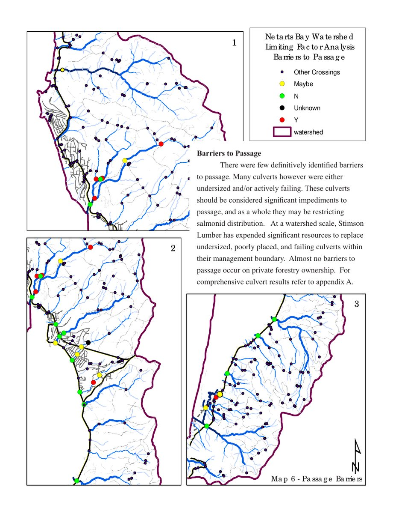

Passage action plan
Name the plugs that unlock miles
A passage plan councils can fund — not a walk without a map.
Score crossings and map where fish stop. Undersized and failing culverts choke distribution even when absolute barriers are few. This work named Whiskey diversion and the first O’Hara culvert among Netarts priorities — culvert-proof planning that guided timber-land replacements where partners acted.
Full study · Demeter Design · Netarts Bay · published assessment map
Map: passage barriers · Graphic Oregon / Demeter Design